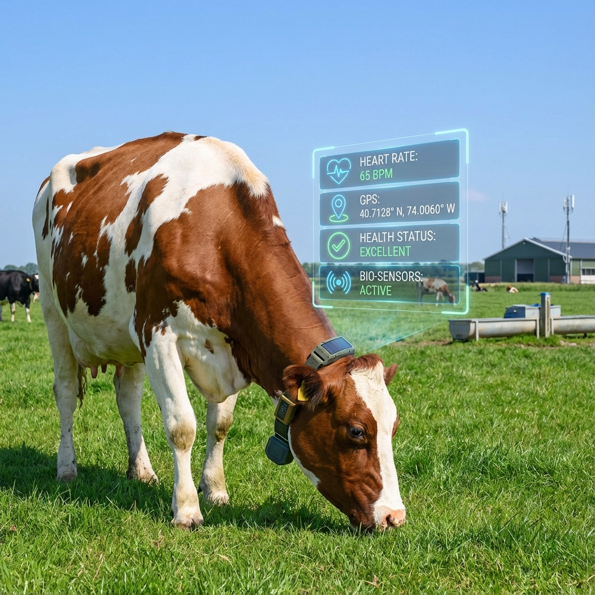

Live
Cattle Monitoring
This project monitors cattle health, behavior, and location in real time using AI cameras and smart collars. It detects, tracks, and analyzes cattle to identify health problems early and prevent theft. The system improves animal welfare and farm management through continuous monitoring and alerts.
- Smart IoT Collars
- LoRaWAN / GPS
- Health Vitals Tracking
- Geofencing Alerts